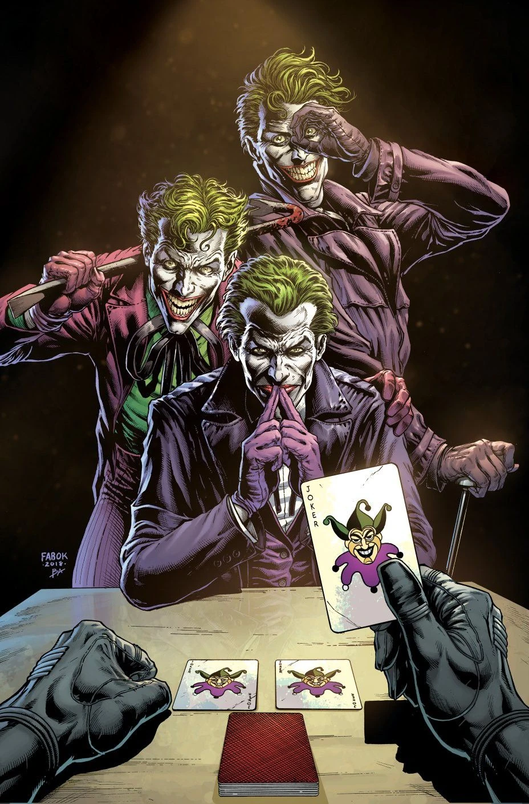

Welcome to "Shadows of Insanity," your ultimate guide to the Joker's chaotic world. Dive into the madness, exploring his origins and dark legacy. Whether you're a fan or a newcomer, join us in unraveling the mysteries of the Clown Prince of Crime. Shadows of Insanity your definitive Joker encyclopedia!
